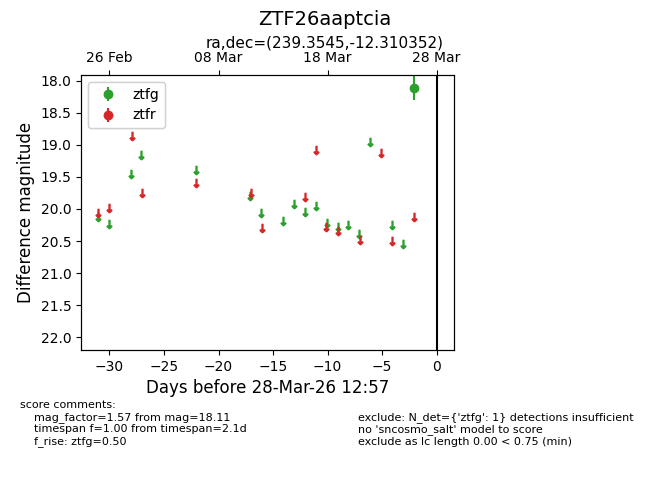
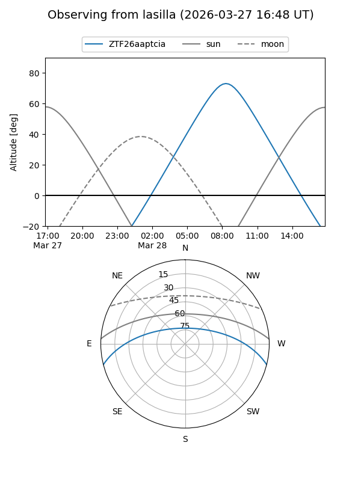
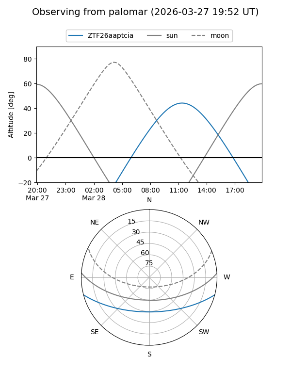

ZTF26aaptcia
Target ZTF26aaptcia at 2026-03-28 13:01
Aliases and brokers:
FINK: link
Lasair: link
ALeRCE: link
alt names
ZTF26aaptcia (ztf,fink_ztf)
Coordinates:
equatorial (ra, dec) = 239.3545,-12.31035
equatorial (HMS+DMS) = 15:57:25.08,-12:18:37.27
galactic (l, b) = (357.9185,+30.09114)
Flags:
Photometry:
last ztfg=18.11
1 ztfg detections
Lightcurve

Visibility


Additional plots